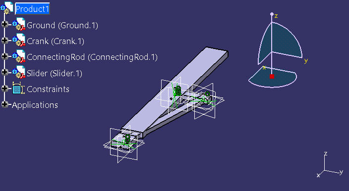
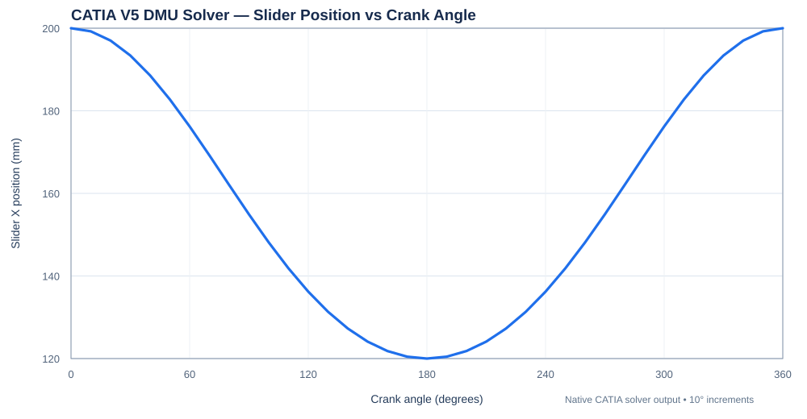

Native CATIA V5 R21 DMU Kinematics position sweep • crank radius 40 mm • rod length 160 mm


Ground fixed; three revolute joints; one prismatic joint; one angle command; one degree of freedom. CATIA solved the crank command from 0° through 360° at 10° intervals and the macro saved each slider transform.
| Angle | Slider X |
|---|---|
| 0° | 200.000 mm |
| 90° | 154.919 mm |
| 180° | 120.000 mm |
| 270° | 154.919 mm |
| 360° | 200.000 mm |
Total slider travel is 80 mm. Solver results agree with an independent geometric position relation to within 3.3×10⁻¹⁰ mm across all 37 points.
Extract the CATIA solver package, keep its four companion CATPart files beside the CATProduct, then open SliderCrank_CATIA_DMU_Solver.CATProduct in CATIA V5 with DMU Kinematics installed.